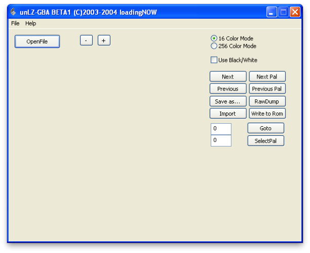
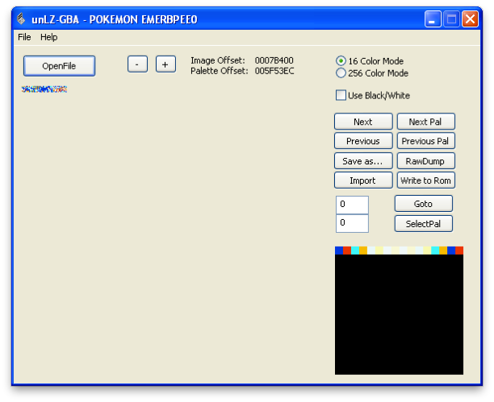
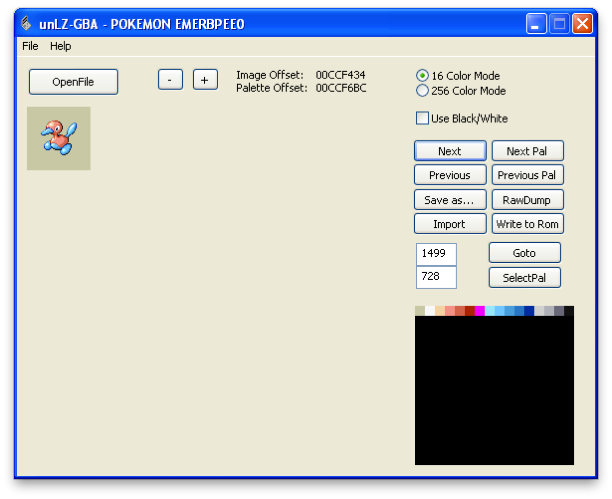
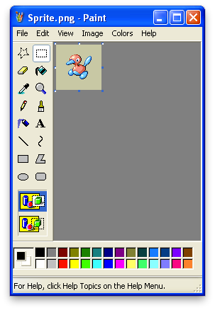
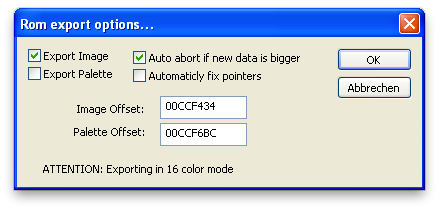
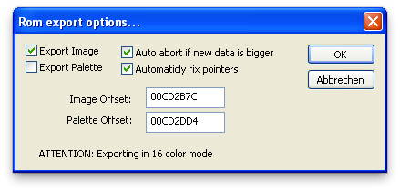
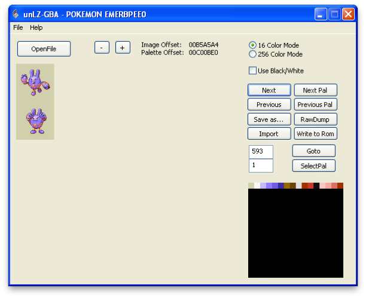
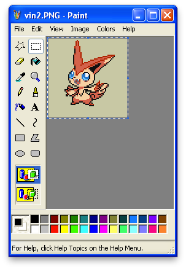
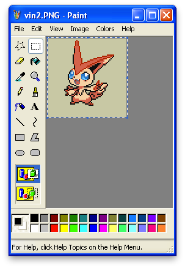
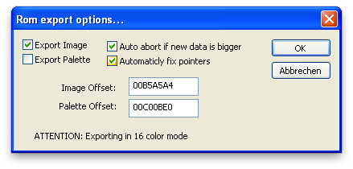

Okay dude, it’s time to make your own Pokémon!
The process really isn’t as complicated as people make it out to be. The key here is doing it neatly. This guide will cover the process for Emerald version, but a similar (easier) method is available in all of the other third generation games. That will be discussed as well.
Okay, so, the first thing you’re going to want to do is find an appropriate Pokémon Sprite to edit. It doesn’t really matter what the image is, just keep in mind that it will drop in both color and resolution drastically when inserted into the game.
Open up unLZ-GBA in Hacking Tools > Elitemap > unLZ-GBA.exe

And... you’re done! NAH I KID!! It’s time to do some things. Serious things. Click on OpenFile and select the ROM that you wish to work with.

The above message may be displayed. Just click OK man. Jeez, no need to freak out.

Now, this certainly doesn’t look any less confusing! Okay, so here’s what’s happening: you’re viewing all of the sprites in the ROM. Some of them (like the one above,) are compressed and uneditable. Others, however, are free for you to manipulate to your will.
The way the images are stored are through the top number in the two number boxes. In order to change sprites, we will be entering a number into the top box, clicking goto, and then changing the sprite. The Next and Previous buttons can also be used to change images, but we’ll be using digits.

I’ve just entered a random digit, 1000, as an example. Watch what happens when I press Goto. NOTE: DO NOT CLICK ENTER. The program will crash. It’s tragic, I know.

It looks like we’ve stumbled upon an attack animation. Now, in theory, you could swap this out for a bitmap, but that’s not what we’re here for. Continue searching for a Pokémon sprite image, or scroll down to the bottom of the page where the ranges are listed.

GADFRIGGINZOOKS, I’ve stumbled upon a Pokémon image! Let’s just work from here for convenience. Click on the button on the right side that says “Save as...” and save it somewhere. Then, open MSPaint. This can be accomplished by going to Start > Run and typing “mspaint.exe”, or by locating it under Accessories.

Microsoft Paint is the built in image editor for windows and it’s great because it’s so simple! Copy and paste the image you want to exchange it with over this one. By doing this, we will preserve both the dimensions and the palette of the original bitmap.

My paste went smoothly! You might have to do some paint trimming to get it to fit. Just be sure to not change the dimensions. If the colors are wrong, you can adjust them manually, but I would recommended going back to unLZ-gba and choosing a different Pokémon’s to “Save as...” and edit in paint. Due to the limitations of the game boy, your sprites are limited to the installed palettes.

Here’s the repositioned edited sprite. Note how I used the same background fill as I did for Porygon 2. This is important, otherwise your Pokémon will either have a solid background behind it or have pieces of it transparent. Now that we’re done with this, save it, switch to unLZ-gba, and click “Import,” right underneath “Save as...” select the sprite you just saved.

Yay! Now, click “Write to Rom” You will be presented with another window. Click OK.


Onoes! When this message appears, try a different Pokémon. When you try a different Pokémon, make sure to change the settings to the ones below:

Keep trying until you get to a Pokémon that will let you write to it under these settings! After a successful write, you may think you’re done, but most likely you are not. Click Next and then Previous to reload your Pokémon’s sprite and you will see that the coloring is off.

As you can see, this little feller has taken on Elekid’s palette. To fix this, we must Import again, only this time checking off the box titled “Export Palette.”

The program might report an error, but that’s okay. We were only trying to export the palette, which will export regardless of whether or not there’s an error. Click Next and then Previous to see if your Pokémon’s sprite is completely satisfactory.
The reason why we can’t just export Palette from the start is for the same reason that the exporting palette works even after it claims to have failed– it would export the palette regardless. Meaning that even though the image failed to load, the Pokémon that you were trying to import over’s sprite palette would be corrupted.
Lather, rinse, and repeat for the backsprite. That won’t be covered here as I don’t have a backsprite for this young chap. The backsprite is located directly after the Pokémon it’s inserted for. Don’t worry about getting the palette correct on the backsprite, it will use the palette of the first image.
ADDITIONAL STEPS FOR POKÉMON EMERALD:
As Pokémon Emerald uses animations, additional steps must be taken in order to get the sprite to animate. Open unLZ-GBA and prepare to get cracking.

The animations are located around 500. Go to that number and then click next/previous until you arrive at the Pokémon you replaced earlier (for me, that’s Elekid.)

Looks like Elekid was located at 593. Okay, here comes the somewhat tricky part. Click “Save as...” and open the sprite in mspaint. Also open the sprite that you created before in another mspaint window. (Just launch MSPaint twice to get the second window.)


Now you can see how the animations work. They’re simply two sprites stacked on top of each other. So, in order to replicate this, we simply do exactly that. Stack our custom sprite on top of itself.
 

Click on the window with the sprite that you created, and press ctrl+A to select all of it, and then ctrl+C to copy it. Then go back into the Animations sprite and paste (ctrl+V) into the window.


Cool! Now, repeat for the bottom half. Unfortunately this time you will have to manually place the sprite in place. If you wish for it to actually do something in its animation, you can edit the custom sprite as well.


Now save the animated ones and import them in unLZ-GBA! Use the following import settings:

END OF EXCLUSIVE POKÉMON EMERALD SECTION.
And you’re all done! The Pokémon that you created will now be available over the one you deployed it over! To move onto the next step in creating your custom Pokémon, which includes movesets, names, stats, evos, and etcetera, please wait until the next tutorial!